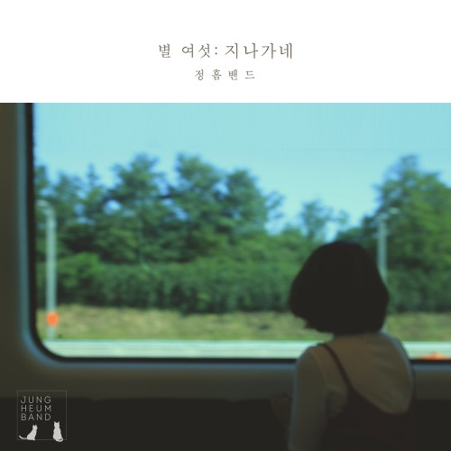

믿을 수 없는 일이 대한민국에 일어났습니다. 시민들과 의원들의 발빠른 대처로 사상초유의 계엄령 사태를 막을 수 있었는데요, 박수와 감사를 보냅니다. 모든 국민이 고통에 빠진 이 시간이 빨리 지나가길 바라는 의미에서 이 노래를 소개해드립니다.

지나가네 노래와 정흠밴드 소개
지나가네는 정흠밴드의 2017년 싱글 앨범 별 여섯에 수록된 곡입니다. 이 노래는 잔잔한 멜로디와 섬세한 가사로 많은 이들의 공감을 얻고 있습니다. 지나가네는 어쿠스틱한 사운드가 돋보이는 곡입니다. 황명흠의 섬세한 기타 연주와 정민경의 감성적인 보컬이 어우러져 옛 추억을 떠올리게합니다. 특히 정민경의 목소리는 홍대 씬에서 꿀성대로 불릴 만큼 매력적이라고 합니다.
정흠밴드는 보컬 정민경과 기타리스트 황명흠으로 구성된 대한민국의 혼성 듀오입니다. 2014년부터 활동을 시작한 이들은 포크와 록 장르를 넘나들며 자신들만의 독특한 음악 세계를 구축해왔습니다. 정민경의 감미로운 목소리와 황명흠의 섬세한 기타 연주가 어우러져 만들어내는 하모니는 많은 리스너들의 귀를 사로잡고 있습니다. 정흠밴드 정민경의 감미로운 목소리도 좋지만 이 파워풀한 노래도 정말 좋습니다. 비욘세의 Love on top 입니다.
노래의 매력
지나가네의 가장 큰 매력은 누구나 한 번쯤 경험해봤을 법한 감정을 섬세하게 표현해낸다는 점입니다. 이별 후의 그리움, 과거에 대한 아쉬움, 그리고 그 모든 것이 시간과 함께 흘러가는 모습을 그려내고 있죠.
황명흠은 이 곡에 대해 "이별이 이미 다 끝나고 여행을 하다가 문득 생각나는 그런 감정들을 얘기하고 있는 곡"이라고 설명했습니다. 이처럼 '지나가네'는 단순한 이별 노래가 아닌, 시간이 흐른 뒤 문득 떠오르는 추억과 그에 대한 감상을 담아낸 곡입니다.
가사 분석
노래는 다음과 같은 가사로 시작됩니다:
"달리는 차 창에 기대어 눈을 감아보니
향긋한 바람 너의 얼굴 너의 향기 떠올라
따스한 햇살처럼 살며시 다가온 너
스치는 풍경처럼 그렇게 지나가네"
이 가사는 과거의 연인을 회상하는 화자의 모습을 그리고 있습니다. 차창에 기대어 눈을 감은 채 떠오르는 추억들, 그리고 그 추억 속 연인의 모습이 마치 스쳐 지나가는 풍경처럼 묘사되고 있죠. 이는 시간의 흐름과 함께 서서히 잊혀가는 추억을 상징적으로 표현한 것으로 볼 수 있습니다.
맺음말
지나가네는 잔잔한 멜로디와 섬세한 가사로 리스너들의 마음을 어루만지는 곡입니다. 과거의 추억을 회상하게 만들면서도, 동시에 그 추억이 흘러가는 모습을 그려내는 이 노래는 많은 이들에게 위로와 공감을 주고 있습니다.
여러분도 이 곡을 들으며 차창에 기대어 눈을 감고, 흘러가는 풍경처럼 스쳐 지나가는 추억들을 떠올려보세요. 여러분의 마음을 자극하고, 잠시나마 과거로의 여행을 떠나게 해줄 것입니다. 음악은 때로 우리의 감정을 대변해주고, 위로해주는 좋은 친구이죠 . 이 노래를 통해 여러분만의 특별한 추억 여행을 떠나보시기 바랍니다. 그 여행이 끝난 후에는, 아마도 조금은 더 가벼워진 마음으로 현재로 돌아올 수 있지 않을까요? 이 어려운 시간이 빨리 지나가기를 기도해봅니다.